2009年1月 の記事
-
せったい
きれいな色～♪薄萌葱色。 興奮して、同僚の男のコに「そこでねー…えーと、かやるど？がやうど？みた」と言ったら 「…ガヤルド…ランボルギーニですね」と。 男のコはすーぱーかーが好きですねー。 1,7…
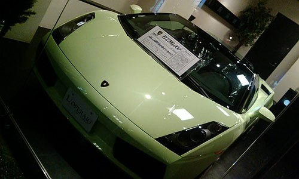
-
読書感想文ひきつづき
チャイナフリー ぐるっと見渡すと、いつのまにか囲まれている「made in china」。 いかに消費社会と中国が密接なものなのか。 一年間、家族を道連れに「made in china」を家に入れな…
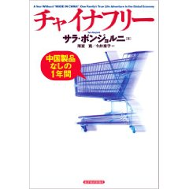
-
>まっちゃんさま
なんとも思い出すたび唾が出る話が教科書にあったのだけど、作者や題名を思い出せない。 ううう。 寿司をつまんで、醤油で汚れた指先を暖簾で拭いて出て行くとゆーくだりがあったのだけど、ネットで調べても出…
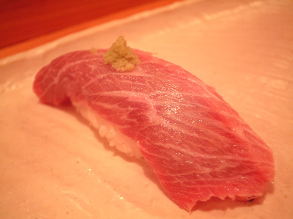
-
春のにおい。β版
トーキョーでおしごと。 夕方はらはらと雨。予報に無い大粒の雨だったのだけど、「あー春のにおいがするー」と、おもわず足を止めてしまった。いやいや足とめちゃいけないんだけど。 気がつけば、もう梅も咲き始め…
-
たまには教育
だらーっと教育テレビを見てた。 かなり本格的なブイヤベースの作り方とかやってるのねー。 なるほどアニス酒のかわりに、白ワインに八角を漬けたものでもいいんだなーと…結構本格的だなーとかなんだり、だらだら…
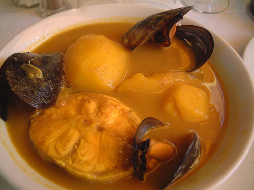
-
テオ・ヤンセン展
すっかり忘れておりました…行かなきゃ！ テオ・ヤンセン展 開催場所は、正月にクルクルクルミオ～♪のスケートリンクイベントを見た場所のよう。 リンク先の動画で見られる、浜辺で風を受ける作品の音がきも…
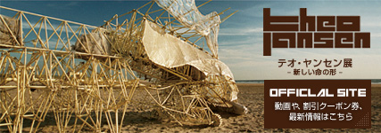
-
ぴっかー！
おしごとですよ！！ うっす！ 今回は（も？）ややこしい！なんらかのニンジンぶら下げて頑張ろう。なにがいいだろかー。 て、ゆーか！ 新橋キムラヤはいつからヤマダ電機になったのー？
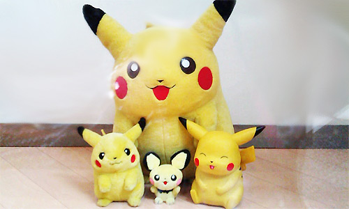
-
アルパカ画像
さいきんアルパカブームなので、のせとこ。 たしかにヘンかも。 youtubeの画像ものせとこ
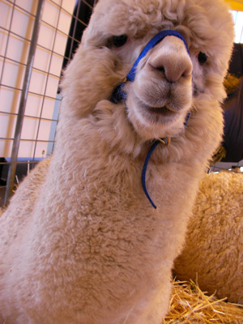
-
Re
忘年会に呼ばれて一泊二日の旅。 久しぶりに羽田に来たら、トイレにモニタがついていてびっくりした。 なんだ。そんなに長居してほしいのか。 トーキョー！ 忘年会会場近くのホテルに泊まる。 なんか見晴…
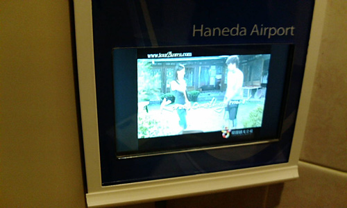
-
いまのわたくし冬の読書感想文
また関東に来てます。 今年も流浪の民。なんかだんだんこっちにいる期間が長くなってきていて、今回は2ヶ月予定。 まー相変わらず、米袋並の荷物担いで走り回っているだけですがー。 走って漕いで泳いでトライア…

-
あけましちゃった
うちの神龍。 五星球はお年玉として会社の男のコにいただきました！やったー！ ことしも忙しそうだけどがんばりまーす！ みなさまにも幸多い一年でありますように！ つかもーぜ！ドラゴンボール！えい！♪
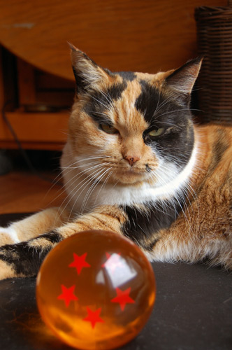
-
そっからまたつぎのひ
とにかく散歩。 表参道から青山方面に出て、キラー通りから原宿方面に。 超ノラさんに会う。 プラプラ歩き終点はぐるっと戻って表参道ヒルズ。 キーラキラ。ハイパー箏奏者とゆー方の演奏があった。ハイパー…

-
つぎのひ
赤坂に移動。 今日はおともだちに会ったり、飲んだりなんだりでぜんぜん写真がありませぬ。 とゆーか、大晦日からずーーーーーーっと飲んでます。 銀座の閑散っぷりもなかなかでしたが、赤坂の閑散っぷりも素晴ら…
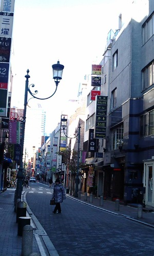
-
がんたん
新年。汐留方面に祈る。 築地本願寺に初詣。 石造りであったり、パイプオルガンがあったり、結婚式を行えたりと教会のような不思議なお寺。 たしかにここの音の響きは海外の教会の音の響きに良く似ている。 …
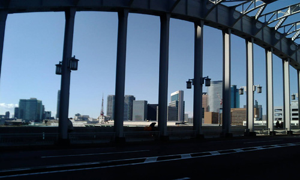
-
おおみそか
仕事で年始早々出社しなくてはいけなかったのだけど、どーあがいてもチケットがとれず、年末から逗留することに。鹿児島に里帰りしている同僚は8時間かけて陸路で帰ってくるとゆー話を聞いたけど、いったいこの年末…
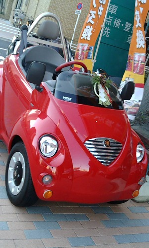